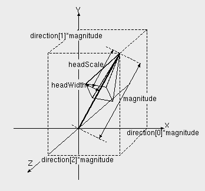

vfr
-
Volflex rendering API
-
class vfrArrow
Class Hierarchy
vfrBase
vfrNode
vfrArrow
Header files
#include "vfrArrow.h"
Constructors / Destructors
vfrArrow(const std::string& name
VFR_NONAME
, const Bool mode
= FALSE
)
デフォルトサイズ(長さ1.0)、デフォルトの方向(1.0, 0.0, 0.0)のvfrArrowオブジェクトを インスタンスする。
name オブジェクト名
mode 自己破壊モード
vfrArrow(const vector3 d, const float l, const std::string& name
VFR_NONAME
, const Bool mode
= FALSE
)
指定された方向(d)、長さ(l)のvfrArrowオブジェクトをインスタンスする。
d 方向ベクトル
l 長さ
name オブジェクト名
mode 自己破壊モード
vfrArrow(const vector3 d, const std::string& name
VFR_NONAME
, const Bool mode
= FALSE
)
指定された方向(d)のvfrArrowオブジェクトをインスタンスする(長さ=1.0)。
d 方向ベクトル
name オブジェクト名
mode 自己破壊モード
vfrArrow(const float l, const std::string& name
VFR_NONAME
, const Bool mode
= FALSE
)
指定された長さ(l)、デフォルトの方向(1.0, 0.0, 0.0)のvfrArrowオブジェクトをインスタンスする。
l 長さ
name オブジェクト名
mode 自己破壊モード
virtual ~vfrArrow()
vfrArrowオブジェクトを破壊する。
public methods / variables
void
setDirection
(const
vector3
v)
方向ベクトルを設定する。
v 方向ベクトル(デフォルト: (1.0, 0.0, 0.0))
void
getDirection
(
vector3
v) const
方向ベクトルを得る。
v 方向ベクトル格納領域
void
setLength
(const float l)
長さを設定する。
l 長さ(デフォルト: 1.0)
float
getLength
() const
長さを返す。
void
setVector
(const
vector3
v)
大きさを持つベクトルで方向、長さを設定する
v ベクトル量(v[0], v[1], v[2])
Bool
getHeadMode
() const
アローヘッド表示モードを取得する
void
setHeadMode
(const
Bool
h)
アローヘッド表示モードを設定する
h アローヘッド表示モード(デフォルト:
TRUE
)
float
getHeadScale
() const
アローヘッドの長さを取得する
void
setHeadScale
(const float hs)
アローヘッドの長さを、全体の長さに対する割合で指定する(デフォルト: 0.2)
hs アローヘッドの長さ(0.0〜1.0)
float
getHeadWidth
() const
アローヘッドの幅を取得する
void
setHeadWidth
(const float hw)
アローヘッドの幅を、全体の長さに対する割合で指定する(デフォルト: 0.1)
hw アローヘッドの幅(0.0〜1.0)
RenderType
getRenderMode
() const
レンダリングモードを返す
Description
vfrArrowクラスは、矢印(アロー)を表すオブジェクトクラスである。
方向(direction)と長さ(magnitude)および アローヘッドの割合(headScale, headWidth)が指定されたとき、 以下のような矢印をレンダリングする。

Arrow Head
vfrArrowオブジェクトは、アローヘッド表示モードが
TRUE
の時 アローヘッド(矢印の頭のキャップ)を表示する。
アローヘッド表示モードは、
setHeadMode()
で設定する。
アローヘッドの大きさは、全体の長さに対する割合で指定する。
RenderMode
vfrArrowオブジェクトは、
レンダリングモード
が
NONE
か
RT_POINT
の場合を除き、
getRenderMode()
で返される レンダリングモードに
RT_WIRE
を加える。
Feedback
vfrArrowオブジェクトはローカル座標系の原点の頂点情報しか持たない。 そのため、フィードバックテストにおいては、
フィードバックモード
属性に応じ、 以下のような結果を返す。
FB_VERTEX
ローカル座標系の原点がフィードバックテストに合格したとき、 頂点数 1、頂点番号 0 を返す。
FB_FACE, FB_EDGE
フィードバックテストは常に合格数 0 を返す。
Copyright(c) 2005 RIKEN